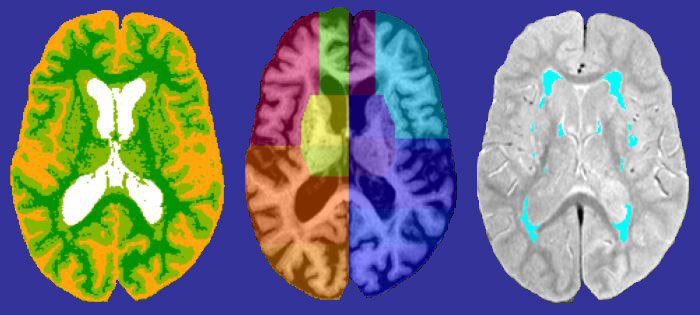

| SBIPS sips |
| HOME - DOWNLOAD - DOCUMENTATION - SUPPORT |
| ABOUT |
The Sunnybrook Image Processing Software (sips) package consists primarily of in-house developed programs that can be used to perform various image processing tasks on structural magnetic resonance brain images such as tissue segmentation (T1seg), semi-automated brain region parcellation (SABRE), white matter hyperintensity and lesion segmentation (Lesion Explorer/flex), and head-from-brain extraction (brain sizer). Some external supporting software is also provided in the sips package, including a subset of programs from the FSL, MINC, and N3 packages (see README file for details). |
| REFERENCES |
If the sips package is used as part of published research, please reference the following papers where appropriate. sips Software LESION EXPLORER / BRAIN SIZER: Ramirez,
J., Gibson, E., Quddus, A., Lobaugh, N.J., Feinstein, A., Levine, B.
Scott, C.J., Levy-Cooperman, N., Gao, F.Q., Black S.E.
(2010.) Lesion Explorer: A comprehensive segmentation and
parcellation package to obtain regional volumetrics for subcortical
hyperintensities and intracranial tissue. Neuroimage, Sep. 19 [Epub ahead of
print].
FLEX: Gibson E.,
Gao F., Black S.E., Lobaugh N.J. (2010). Automatic
segmentation of white matter hyperintensities in the elderly using
FLAIR images at 3T. Journal of
Magnetic Resonance Imaging, 31, 1311-22.
SABRE: Dade L.A.,
Gao F.Q., Kovacevic N., Roy P., Rockel C., O'Toole C.M., Lobaugh N.J.,
Feinstein A., Levine B., Black S.E. (2004). Semiautomatic
brain region extraction: A method of parcellating brain regions
from structural magnetic resonance images. Neuroimage, 22, 1492-502.
T1SEG / AUTO_HFB: Kovacevic
N, Lobaugh NJ, Bronskill MJ, Levine B, Feinstein A, Black SE.
(2002). A robust method for extraction and automatic segmentation
of brain images. Neuroimage,
17, 1087-100.
sips External Supporting Software FSL - (avwmaths, bet, fast, flirt) N3 - (nu_correct) MINC - ( nii2mnc, mincmath, mnc2nii) |